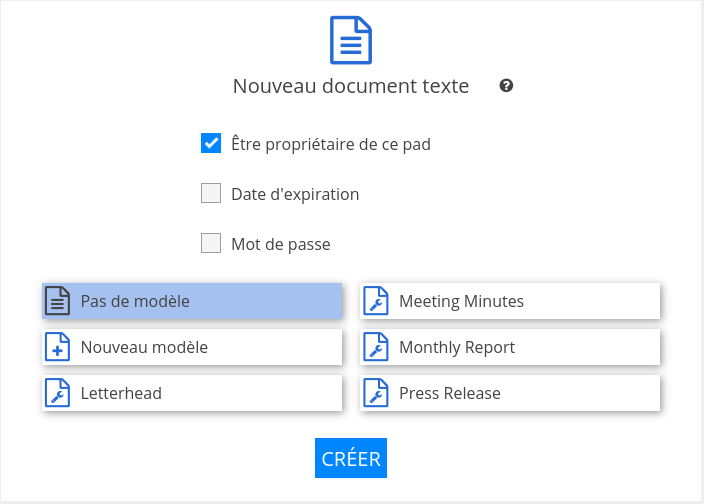
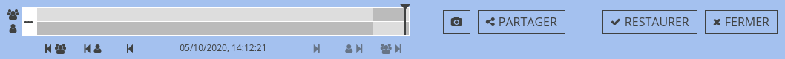
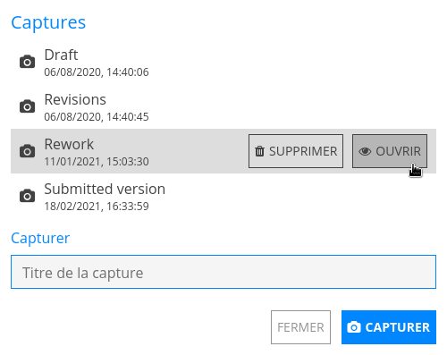
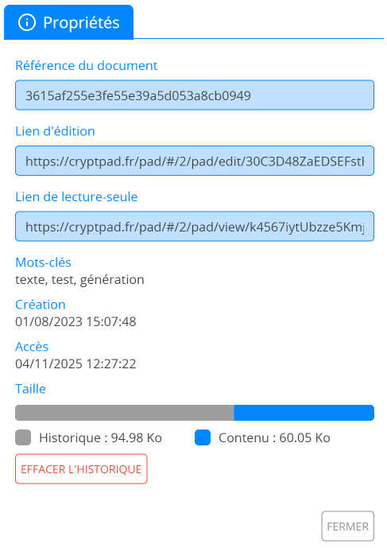

Général#
Nouveau document#
Pour créer un nouveau document :
Partout sur CryptPad : Ctrl+e.
Depuis le CryptDrive :
Nouveau pad dans la barre d'outils.
Nouveau pad en bas de la liste/grille.
Depuis un document : Fichier > Nouveau.

Utilisateur·ices enregistré·es
L'écran de création permet de paramétrer un nouveau document.
Être propriétaire de ce document : Créer le nouveau document en tant que propriétaire. Si le document est créé sans propriétaire, ce réglage ne peut pas être modifié.
Ajouter une durée de vie : Spécifier une durée après laquelle le document sera supprimé. Ce réglage ne peut pas être modifié une fois le document créé.
Ajouter un mot de passe : Sécuriser le partage du document avec un mot de passe. Un mot de passe peut être ajouté et/ou modifié une fois le document créé dans le menu Accès.
Modèle : Choisir entre créer un document vierge ou utiliser un modèle comme point de départ.
Note
Tous les modèles enregistrés dans CryptDrive ou dans les équipes dont vous faites partie apparaissent sur l'écran de création. Pour enregistrer un document comme modèle :
Depuis le document : Ficher > Enregistrer en tant que modèle.
ou
Dans le CryptDrive : Faire glisser le document dans le dossier Modèles.
Sauvegarde#
Les changements effectués sur vos documents sont enregistrés automatiquement. La ligne de statut dans la barre d'outils (sous le titre) permet de vérifier que les changements sont bien enregistrés.
Faire une copie#
Pour dupliquer un document :
Depuis le document à dupliquer : Ficher > Créer une copie.
Depuis le CryptDrive :
Clic-Droitsur le document à dupliquer > Créer une copie.
Note
Créer une copie peut être utilisé pour purger l'historique d'un document, par exemple si vous souhaitez rendre illisible les précédentes modifications présentes dans l'historique ou le rendre complètement inaccessible.
Avertissement
Attention, un important inconvénient d'utiliser Créer une copie est que vous aurez à repartager le lien du document avec vos contacts ou les personnes à qui vous avez envoyé le lien précédemment.
Historique des documents#

La barre d'outils de l'historique#
L'historique des documents est sauvegardé et peut être restauré en cas de besoin. Pour voir et restaurer l'historique d'un document :
Ficher > Historique.
Utiliser les flèches pour naviguer :
et entre chaque changement.
et entre chaque auteur·ice.
et entre chaque session (lorsque le même groupe d'auteur·ices était connecté au document).
Restaurer l'étape sélectionnée avec Restaurer, ou sortir sans restaurer avec Fermer.
Pour économiser de l'espace de stockage, l'historique peut être supprimé dans les propriétés du document. Propriétaires du document
Note
La fonctionnalité d'historique fonctionne légèrement différemment dans l'application Tableur, en raison de l'intégration de OnlyOffice avec la collaboration chiffrée en temps réel de CryptPad. Veuillez vous référer à l'historique du tableur pour plus de détails.
Liens vers une version
Pour partager un lien vers la version affichée dans l'historique :
Partager dans la barre d'outils.
Sélectionner Contacts, Lien ou Intégration de la même façon que lors du partage d'un document.
Les destinataires verront la version sélectionnée en mode lecture seule.
Avertissement
Partager un lien vers une version donne également accès en lecture seule à toutes les versions du document.
Faire une capture dans l'historique
Pour faire une capture de la version affichée dans l'historique :
Bouton dans la barre d'outils.
Dans le dialogue, donner un nom à la capture.
Capturer
Captures#

Le dialogue de captures#
Les captures sont des versions dans l'historique d'un document qui sont nommées pour être facilement retrouvées.
Pour faire une nouvelle capture du document :
Ficher > Captures
Dans le dialogue, donner un nom à la capture.
Capturer
Pour faire capturer une version antérieure dans l'historique du document voir faire une capture dans l'historique ci dessus.
Pour voir et restaurer une capture :
Ficher > Captures
Dans le dialogue,
Clicsur la capture et Ouvrir.La capture s'ouvre dans une nouvelle fenêtre.
Restaurer ou Fermer
Pour effacer une capture :
Ficher > Captures
Dans le dialogue,
Clicsur la capture et Supprimer.
Propriétés#

Pour accéder aux propriétés d'un document :
Depuis le document : Ficher > Propriétés.
Depuis le CryptDrive :
Clic-Droitsur le document > Propriétés.
Données disponibles :
Référence du document à partager avec les administrateur·ices d'instance en cas de problème (cela ne permet pas d'accéder au contenu du document).
Liens d'édition et de lecture seule (suivant vos permissions d'accès au document).
Dates de création et d'accès.
Taille.
La taille du document permet de voir la proportion du stockage utilisée pour le contenu du document et pour son historique. Pour économiser de l'espace de stockage : Effacer l'historique puis confirmer. Propriétaires du document
Avertissement
Les captures font partie de l'historique du document. Si vous effacez l'historique dans les propriétés, les captures seront aussi supprimées.
Utilisateur·ices et Chat#
La liste des utilisateur·ices et le Chat permettent de voir et d'interagir avec les autres utilisateur·ices présent·es sur le document en même temps que vous.
Pour afficher/cacher ces fenêtres :
pour la liste des utilisateur·ices.
Chat pour le chat.